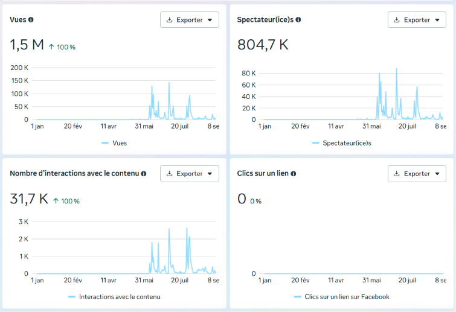
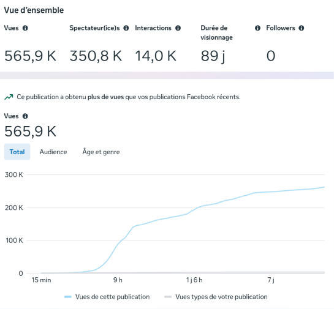
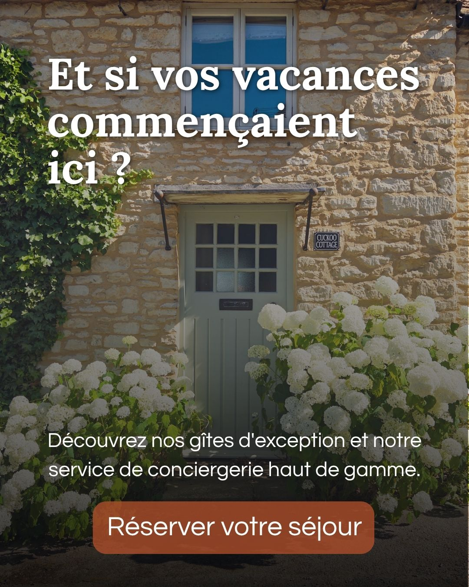
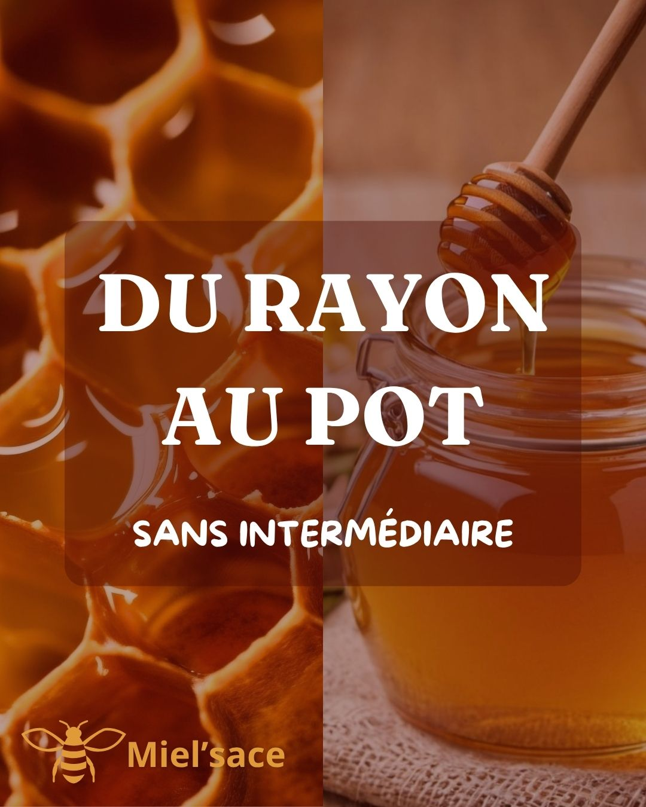

Polyvalence
Stratégie, réseaux sociaux, vidéo, création graphique et intégration web.
Portfolio — 2026/2027
Profil polyvalent en communication numérique, je combine stratégie, création de contenu et développement web pour concevoir des expériences cohérentes et engageantes.
01 — À propos
Étudiant en troisième année de BUT MMI à l’IUT de Haguenau, parcours stratégie de communication numérique et expérience utilisateur, je recherche une alternance me permettant de participer à des projets de communication concrets.
Ma formation me permet d’aborder un projet dans son ensemble : comprendre une cible, construire une stratégie, produire les contenus puis mobiliser le design ou le développement web pour leur donner vie.
Mes expériences personnelles et professionnelles m’ont également appris à travailler avec autonomie, à analyser les résultats obtenus et à adapter ma manière de faire lorsqu’un contexte évolue.
Stratégie, réseaux sociaux, vidéo, création graphique et intégration web.
Gestion complète de Mission Mars et conception de Rusty de l’idée jusqu’au développement.
Évolution d’une ligne éditoriale selon l’audience et apprentissage autonome d’un poste en chimie analytique chez Eurofins.
Recherche active
Je recherche une structure dans laquelle mettre mes compétences en communication numérique au service de projets concrets, tout en continuant à progresser.
02 — Projets sélectionnés
Cas d’étude social media
Une chaîne de vulgarisation consacrée à la science-fiction et à la colonisation de Mars, développée de zéro et sans budget publicitaire.
Le défi
Concevoir une identité, définir une ligne éditoriale et publier régulièrement des contenus capables de rendre accessibles des sujets liés à Mars et à la science-fiction.
La stratégie
Initialement pensée pour un public adolescent, la ligne éditoriale a évolué après l’analyse des premiers résultats. L’engagement d’une audience de 45 à 65 ans m’a conduit à adopter une narration plus posée et un traitement plus premium.
La production
Trois vidéos courtes et deux publications statiques par semaine : recherche, écriture, montage, miniature, diffusion, modération et analyse des statistiques.
Meilleure vidéo
565 800 vuesEnseignements
Sélection vidéo


Expérience interactive — Projet personnel
Une démonstration interactive mêlant illustration, motion design et développement web.
L’utilisateur aide Rusty à récupérer sa gourde, sa serviette et son haltère afin de le faire passer du statut « épuisé » au statut « en forme ».
Communication numérique — 2 semaines
Conception en équipe d’une stratégie pour le concours Pépite, en collaboration avec des représentants du pôle étudiant.
Plan de communication — Projet pédagogique
Élaboration complète d’un plan de communication accompagnant une vidéo de présentation du BUT MMI.
Conception UX — 2 semaines
Conception de l’architecture d’un site consacré à la vente et à la réparation d’instruments, ainsi qu’à la réservation de cours de musique.
Cinq personas hypothétiques pour identifier les besoins, objectifs et points de friction.
Organisation des contenus et services dans une arborescence cohérente.
Création en binôme de user flows pour simplifier les principales actions.
Créations complémentaires
Trois créations personnelles réalisées en dehors des cours et des expériences professionnelles.



03 — Expériences
Eurofins EAEF — Saverne
Une expérience en chimie analytique, éloignée de ma formation initiale, qui démontre ma capacité à apprendre rapidement et à devenir autonome dans un environnement exigeant.
Office de tourisme du Pays de Haguenau
Production autonome de contenus destinés aux réseaux sociaux de l’Office de tourisme, avec validation par un tuteur.
04 — Compétences
Utilisation avancée
Bonnes bases
Langues
05 — Parcours
IUT de Haguenau
Parcours stratégie de communication numérique et expérience utilisateur.
Lycée du Haut-Barr — Saverne
Un projet, une opportunité ?
Je suis disponible dès maintenant pour discuter d’une alternance en communication numérique.
Basé à Haguenau — mobile à Strasbourg, Saverne, Sarre-Union et alentours.
Télécharger mon CV